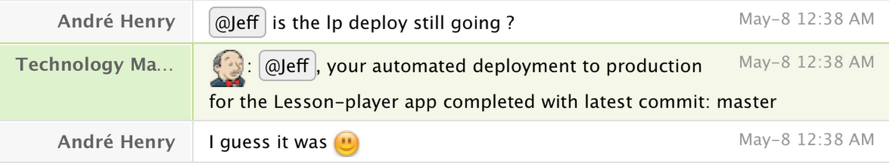

Automation
The must have trend of 2015
These Slides: TheJefe.github.io/automation/ Created by Jeff Koenig / @JeffKoenig
What is Automation?
Building

Testing
Deploying

Fun
Automatically!!!
Why you need automation?
Because we want to ship code often.
Why you need automation?
Find major issues in your codes in minutes, rather then weeks
THROW THEM AWAY
Why you need automation?
Because weeks of manual regressions tests is mind-numbing.
maintaining manual test scripts is monotonous
Why you need automation?
It frees up your team to do more interesting things.
How to get started
Pick a Test Framework
- MiniTest
- Rspec
- Jasmine
- Cucumber
- JUnit
Write Tests!
Start with your core stuff
When you find a bug, write a test to reproduce it
New features means new tests
Find your projects weak points
Write some automated tests to expose that issue

Get Continuous Integration
Commen Problems
ND Failures
Over Automated
Culture
Agree on Ground Rules
Code with failing tests can NOT be MERGED
Code with failing tests can NOT be DEPLOYED
New features can not be merged without tests
YOU MUST DO Test Driven Development
(TDD)WRONG
git rebase -iWho is responsible for writing tests?
THE TEAM
ChatOps
used with permission from BillChatOps
 used with permission from AndreMore on ChatOps
slides.com/carolnichols/chatopsCourtesy of Carol Nichols
THE END
LINKS!!!
- Twitter: @JeffKoenig
- Github: TheJefe
- These Slides: TheJefe.github.io/automation/
- Jenkins CI
- Cloudbees for Jenkins hosting
- Travis CI
- Chat bot:Hubot